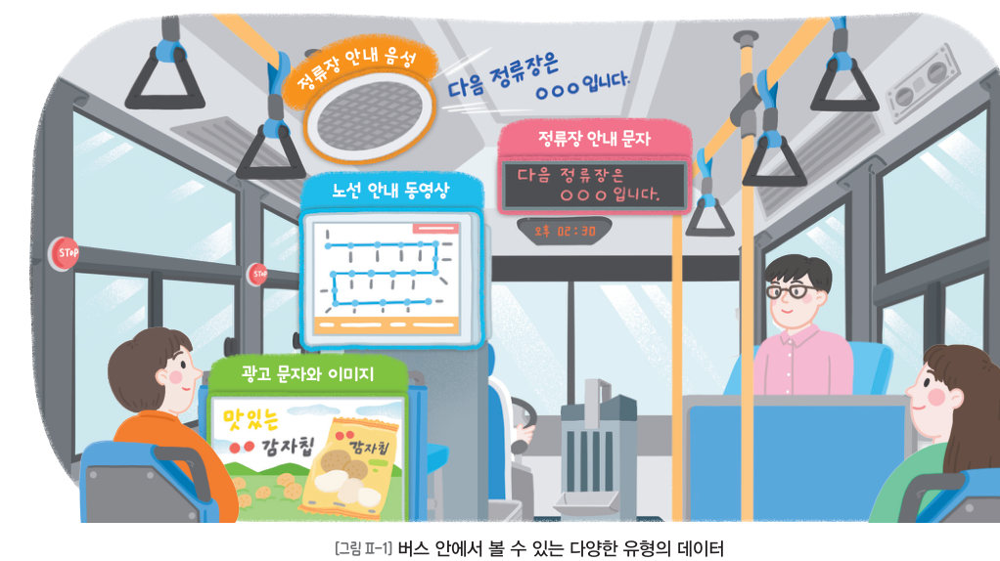
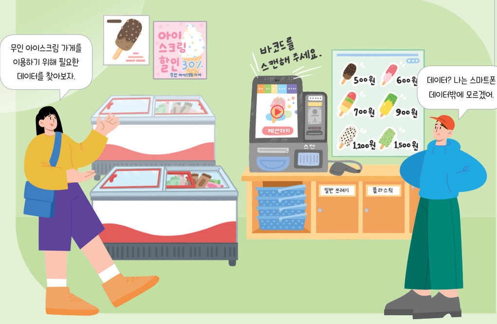
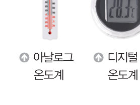
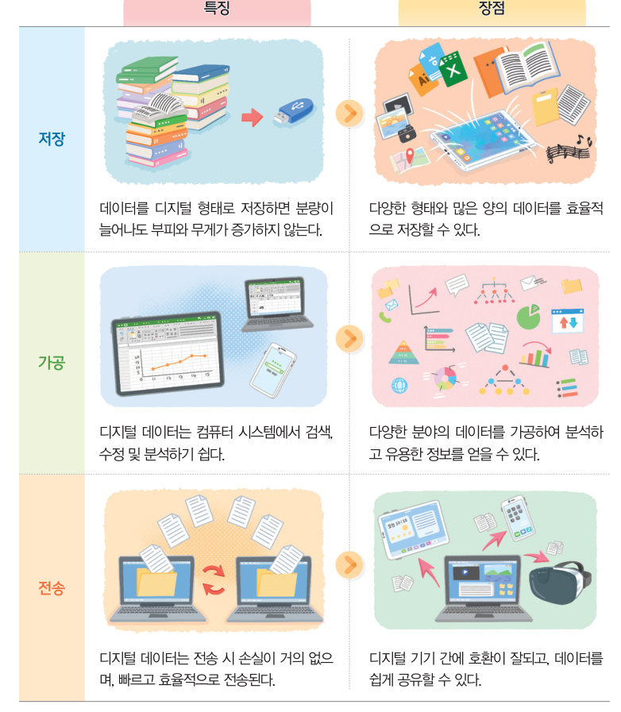

디지털 형태의
데이터
버스 안의 안내 문자, 광고 사진, 안내 방송, 노선 영상 — 모두 데이터예요. 데이터의 유형을 분류하고, 아날로그와 디지털 신호를 열 번씩 복사해 비교하며 디지털 데이터가 저장·가공·전송에서 어떤 장점이 있는지 알아보자.
“친구들과 여행하며 촬영한 사진을 주고받을 수 있어.” “내가 좋아하는 음악이나 영상을 검색하여 듣거나 볼 수 있어.” 생활 속에서 데이터는 다양한 형태로 존재한다. 다음 그림에서 데이터로 활용될 수 있는 것에는 무엇이 있을지 찾아보자.

우리는 버스를 타고 이동할 때 버스 안에서 다양한 데이터를 보고 들을 수 있다. 다음 정류장의 이름과 현재 시각을 나타내는 문자와 숫자, 광고 안의 사진과 그림, 정류장 안내 음성, 노선 안내 동영상 등 다양한 데이터를 접할 수 있다. 이처럼 문자, 숫자, 이미지, 소리, 동영상과 같이 관찰이나 측정을 통해 얻을 수 있는 값이나 사실을 데이터라고 한다. 실생활의 데이터는 다양한 유형으로 표현되며, 사용 목적에 따라 알맞은 유형의 데이터를 선택하여 사용한다.
| 정류장 안내 문자 ‘다음 정류장은 ○○○입니다’ | |
| 버스 요금 1,500원 | |
| 광고 속 떡볶이 사진 | |
| 정류장 안내 방송 | |
| 노선 안내 영상 | |
| 내 키 158 cm | |
| 학급 단체 사진 | |
| 좋아하는 노래 |
아날로그는 데이터를 연속적인 신호로 나타내는 것이며, 디지털은 데이터를 불연속적인 숫자로 명확하게 표현한 것이다. 디지털 데이터는 아날로그 데이터와 비교할 때 저장, 가공, 전송 면에서 특징과 장점이 있다. 이로 인해 생활 속 데이터는 아날로그에서 디지털로 변환되고 있으며, 새롭게 생성되는 데이터의 대부분이 디지털 형태로 만들어지고 있다.


| 데이터를 디지털 형태로 저장하면 분량이 늘어나도 부피와 무게가 증가하지 않는다. | |
| 컴퓨터 시스템에서 검색, 수정 및 분석하기 쉽다. | |
| 전송 시 손실이 거의 없으며, 빠르고 효율적으로 전송된다. | |
| 다양한 분야의 데이터를 분석하여 유용한 정보를 얻을 수 있다. | |
| 디지털 기기 간에 호환이 잘되고, 데이터를 쉽게 공유할 수 있다. | |
| 다양한 형태와 많은 양의 데이터를 효율적으로 저장할 수 있다. |
| 아날로그를 디지털로 변환할 때 데이터를 완전하게 복원할 수 있다. | |
| 디지털 기기의 배터리가 방전되면 디지털 데이터를 이용할 수 없다. |
예) 버스를 이용할 때 — 교통 카드나 스마트폰으로 요금을 내고, 정류장의 전자 안내판이나 앱으로 도착 시간을 확인한다. 아날로그 방식인 편지는 종이에 써서 우체통에 넣고 받기까지 여러 날이 걸리지만, 디지털 방식인 전자 우편은 글자뿐 아니라 문서, 사진, 동영상도 보낼 수 있고 받는 사람이 바로 확인할 수 있어 시간과 비용을 절약할 수 있다.
| 01 아날로그는 연속적인 데이터를 불연속적이고 명확한 수치로 표현한 것이다. |
1디지털 형태의 데이터
| 평가 기준 | 스스로 평가 |
|---|---|
| 디지털 문화 소양 실생활에서 사용되는 다양한 데이터의 유형을 설명할 수 있는가? | |
| 디지털 문화 소양 디지털 형태의 데이터가 갖는 특징과 장점을 아날로그와 비교하여 설명할 수 있는가? |